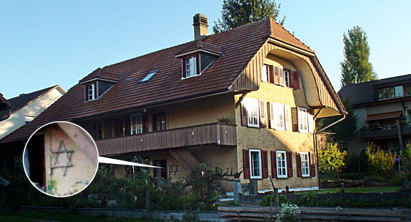
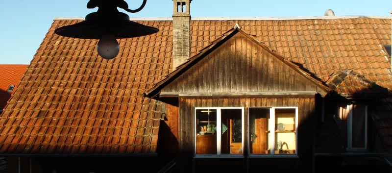
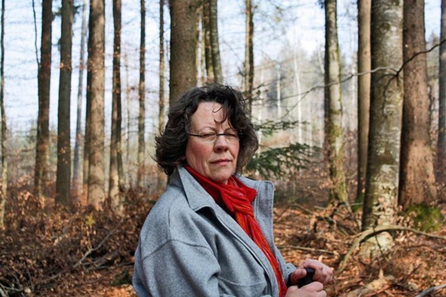
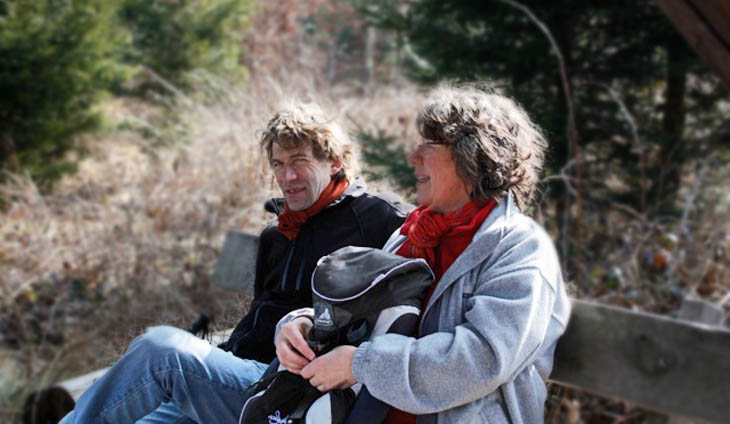
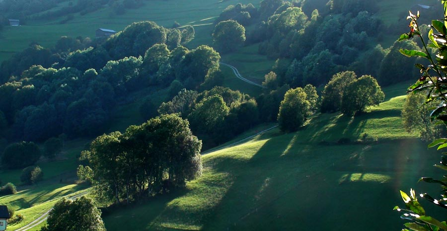
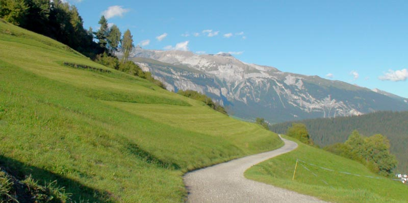
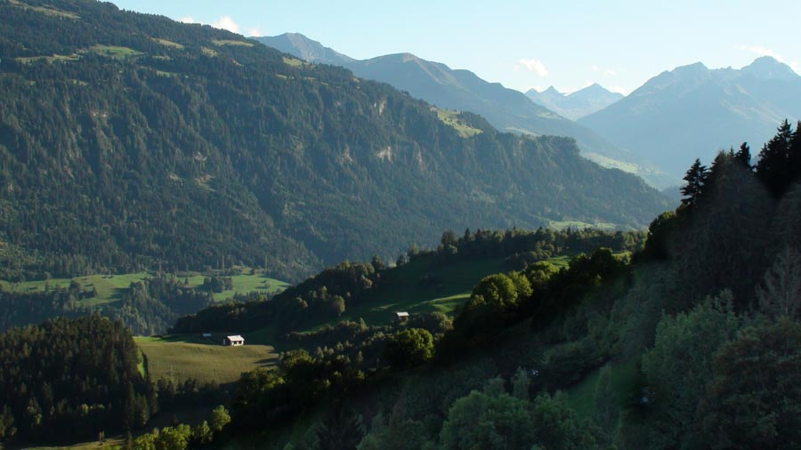
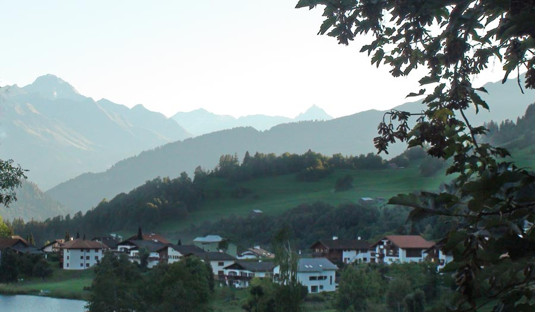
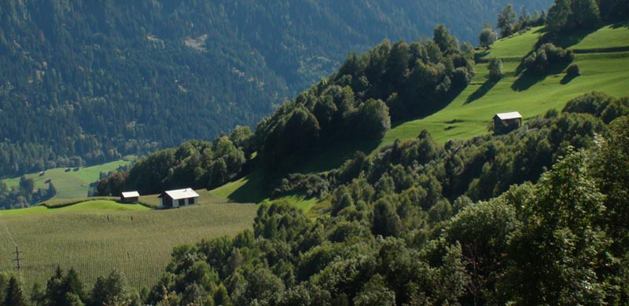
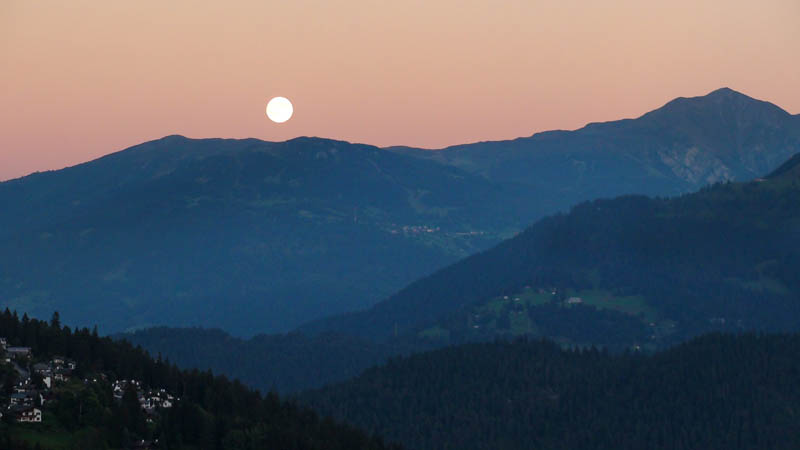

The Creativity of Faith. A Vineyard of One's Own in Israel
How many of us can say, in passing, "I have a vineyard of my own in Eretz Israel"? A real vineyard, whose grapes are made into wine? It was surprising for me to hear this phrase in Switzerland from a couple of modest means.

Author: Ephraim Kalish (photos by the author)
The creativity of faith. A vineyard of one's own in Israel
Our friends had found us a room to rent in advance, so that we would have somewhere to stay during our time in Switzerland. We had come at the invitation of a house of prayer in Bern. I was presenting art midrashim for them.
But I want to talk about the vineyard. When the owners of the house, Urs and Maria, learned that we were Israelis, they refused to take payment for our stay and gave us a small separate flat in the village of Gasel, fifteen minutes' drive from Bern. The flat was part of an old farmhouse that hid under one roof three floors of living quarters, a cattle shed and a source of drinking water, constantly murmuring along a trough right there. The animals were gone by our time; once this had been a large farm. But now only the owners lived in the house, still sound and strong. Their five children had moved away and married. Little by little Urs and Maria had become town dwellers: they worked as cleaners in the school there in the village and rented out the free rooms.


A little later I learned that they have a special relationship with Israel. Years ago, as a young woman, Maria spent a couple of years in Israel as a volunteer. The couple are Protestant Christians and have always kept a special place in their hearts for Israel.
When we had finished all our seminars and art midrashim, we called on Maria and Urs to say shalom and to thank them for their warm welcome. And in the conversation, already as we were saying goodbye, I do not remember how, this phrase came up quite by chance: "We have a vineyard of our own in Israel…" I took it figuratively, in the sense that they pray for and bless Israel and so, as it were, cultivate a vineyard in the Holy Land.
I was wrong. They meant a real vineyard, located in a quite definite part of Israel. When I realised my mistake, it seemed strange and incomprehensible to me: how, and above all why, did this couple of modest means, Swiss though they were, keep a vineyard in Eretz Israel?


"It's simple," Maria explained. She was more talkative than Urs and managed to give out the information in two languages: first in English to my wife and companion, then in German to me (my English is hopeless). "It's very simple," she repeated. "We live by our faith and act as we understand the Holy Scriptures."
And they speak a great deal about Israel, God's chosen people, and about how God promised through the prophets thousands of years ago to restore it in its land. And the land that once, for Israel's sins, became a wilderness, a dwelling for jackals and a home for ostriches, will be restored again by the Most High when the time is fulfilled, as He swore to Moshe and the prophets: Amos 9:14: "And I will bring again the captivity of my people of Israel, and they shall build the waste cities, and inhabit them; and they shall plant vineyards, and drink the wine thereof; they shall also make gardens, and eat the fruit of them." Isa. 61:4–5: "And they shall build the old wastes, they shall raise up the former desolations, and they shall repair the waste cities, the desolations of many generations. And strangers shall stand and feed your flocks, and the sons of the alien shall be your plowmen and your vinedressers." And many other scriptures of this kind. "This spoke to us very clearly," Maria said. "We prayed, and for us it became a revelation and a call to action. We found that the Bible speaks directly to us and about us. We understood that the strangers the prophets speak of are Urs and me. We will plant vineyards in the Land of Israel, and the wilderness will become a garden in fulfilment of the prophecy. God will do His will through us."



"We simply decided to obey this call, and at a family council (the children were still with us then) we decided that every year we would buy vine seedlings from KEREN KAYEMETH LEISRAEL (the Jewish National Fund), one seedling for each member of the family, and pay for their planting and care. For many years now we have been planting seven seedlings every year. So now there is a whole vineyard in Israel planted by us. And in the wilderness turning into a garden, and in the vines of Israel filling with juice, there is a small part of ours too."
She said this very humbly, but one could see that she was pleased with her testimony, as though she had given an account not to us but to the One who had entrusted her with the task, and had received His praise. It was, as it were, between them: Maria and Urs and their God.
I was shaken by this testimony and its simplicity. Grand prophecies spoken thousands of years ago, addressed to countries and continents and describing the eschatological processes of the last times, these simple Swiss people took personally, as a word addressed to them by the Eternal One Himself. They made a decision and have kept to it for many years, thereby becoming a quite concrete part of what is written in the prophets. I was struck by this simplicity of understanding and of acting on one's understanding. For me, the testimony of these former farmers became one of the strongest impressions of Switzerland.


A few years later, when we were again preparing to visit the same house of prayer at its invitation, we wanted to bless these people in some way. We bought a good Israeli wine from the Carmel winery (those who have drunk Israeli wines will know what I mean), with the name on the label of one of the most beautiful mountains, mentioned in the Song of Songs, and took it as a gift for Maria and Urs. This time we were staying elsewhere and drove to Gasel specially to deliver the wine. "This is wine for you from your vineyard," we announced, handing over the precious cargo. There was no surprise on Maria's face; it was hard to tell what she was thinking. She held the wine up to the light, was pleased with its condition, or rather with the results of the whole family's labour over many years, and then added: "This year we will plant eight vines in Israel. Our first grandchild has been born, so the eighth cutting will be from him."

My impressions of Bern in this video: